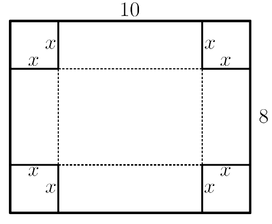

class: center, middle # Polinomi v škatlah -- <br> <b><em>Kakšna je največja prostornina škatle z odprtim vrhom, ki jo lahko oblikujemo iz kosa kartona pravokotne oblike?</em></b> --- ## Polinomska funkcija -- Polinomska funkcija $p(x)$ ima standardno obliko $$p(x) = a\_n x^n + a\_{n-1} x^{n-1} + \cdots + a\_1 x + a\_0.$$ To je vsota členov, kjer je vsak sestavljen iz konstantnega koeficienta ($a_i$), pomnoženega z neodvisno spremenljivko ($x$) na nek nenegativen celoštevilski eksponent; členi so razvrščeni po padajočih eksponentih. Stopnja polinomske funkcije je vrednost največjega eksponenta ($n$). <br> -- <div class="shadowbox"> <b font size="5">PRIMER</b font> <br> $f(x) = 5x^3 - 24x^2 + 13x + 27$ je polinomska funkcija tretje stopnje (znana tudi kot kubična funkcija). Konstantni člen (v tem primeru $27$) je koeficient, pomnožen z $x$ na ničelno potenco. </div> ??? Omeni še kvadratno funkcijo kot poseben primer. --- ## Problem -- Imate list lahkega kartona, ki ga želite zložiti v škatlo z odprtim vrhom, tako da iz vsakega vogala izrežete kvadrat s stranico dolžine $x$ in prepognete stranice. List kartona je velik $8 \times 10 ~ cm$. <center></center> -- <br> <div class="shadowbox"> <b><em><center>Katera vrednost $x$-a nam da največjo možno prostornino škatle?</center></em></b> </div> ??? Reševanja tega problema se lahko lotimo na več načinov. --- ## 1. način: sestavljanje škatle -- S sestavljanjem škatel preizkusite različne možnosti izbir $x$-a. Potrebujete: * liste kartona enakih velikosti; * lepilni trak in * polnilo za škatlo (npr. pesek, zrnato žito ...). -- Za vaš prvi $x$, recimo $x = 0,5 ~cm$, napolnite zloženo škatlo. Nato poskusite z nekoliko večjim $x$-em, recimo $1,0~cm$. Stresite vsebino prve škatle v drugo škatlo in ugotovili boste, da boste morali dodati več polnila. Nato po potrebi postopek ponavljajte, dokler ne ugotovite, da imate z večjim $x$-em preveč vsebine iz prejšnje škatle. S tem ste našli vrednost $x$-a, ki nam da škatlo z največjo prostornino. --- ## 2. način: izdelava preglednice -- Prostornina pravokotne škatle je odvisna od dolžine ($l$), širine ($g$) in višine ($h$): $$V = l\times g\times h.$$ -- Oblikovati želimo preglednico, ki pomnoži $l$, $g$ in $h$, za številne zaporedne vrednosti $x$. -- V <a href="https://lokar.fmf.uni-lj.si/moodle/mod/resource/view.php?id=7844">*Excelovi datoteki*</a> najdete preglednico, ki jo boste uporabili v nadaljevanju. <figure> <img src="izračun_volumna.png" alt="Izračun volumna - tabela" style="horizontal-align: middle"> </figure> -- Začnemo lahko s stolpcem za $l$, stolpcem za $g$, stolpcem za $h$ in stolpcem za njihov produkt, to je prostornino $V$. ??? --- ### Izpolnjevanje tabele: -- * Generiranje vrednosti $x$: začnemo z $0$, (že vpisana); nato pa uporabimo formulo <span class="excel"><code>=B3+$I$5</code></span>, ki bo podala vrednosti za $x$ glede na želeno diferenco, za začeten primer naj bo $0,5$. ??? Opozorilo: Kako se zaklene celica pri pisanju formul? Diference $x$, dolžino in širino kosa kartona se izbere s spustnim seznamom v tabeli KARTON. Le-to 'pomnožite' po stolpcu navzdol, dokler ne pridete do vrednosti $\frac{dolžina}{2}$. -- * Generiranje vrednosti $l$: za izračun vpišemo formulo <span class="excel"><code>=$I$3-2*B3 </code></span>, glede na velikost $x$ in dolžino prvotnega kosa kartona, za začetek naj bo $10$. -- * Generiranje vrednosti $g$: zapišemo formulo <span class="excel"><code>=$I$4-2*B3 </code></span>, odvisno od velikost $x$-a in širine prvotnega kosa kartona, za prvi primer jo nastavite na $8$. -- * Višina $h$ škatle je enaka velikosti $x$, torej nam to da formula: <span class="excel"><code>=B3</code></span>. -- * Zapišemo še zadnjo formulo, in sicer za velikost prostornine: <span class="excel"><code>=C3\*D3*E3</code></span>. -- <br> <br> Vizualizirajte rezultate tako, da jih narišete na graf. Pri izbiri grafa izberite razpršeni graf XY. <button onclick="resitev()">Rešitev problema (Pija Kapš)</button> <label id="na-resitev"></label> --- ## Uporaba prvega in drugega odvoda za iskanje lokalnega maksimuma in minimuma funkcije -- Poglejmo si uporabo na primeru kvadratnega in kubičnega polinoma. -- <div class="shadowbox"> <b font size="3">PRIMER 1</b font> <br> Naj bo $p(x)= -x^2 + 4x + 5$ polinom druge stopnje. <br> Potem je $p'(x) = -2x + 4$ in $p''(x) = -2$. <br> Zapišemo enačbo $p'(x)= 0$, ki nam da $-2x + 4 = 0$ in $x = 2$. <br> Ker je $p'(2) = 0$ in $p''(2) < 0$, je točka $(2, 9)$ lokalni maksimum. </div> ??? Povej, kakšen je kriterij pri prvem in drugem odvodu za določitev, ali je vrednost minimum ali maksimum funkcije. -- <div class="shadowbox"> <b font size="3">PRIMER 2</b font> <br> Naj bo $p(x) = \frac{x^3}{3} - \frac{5x^2}{2} + 6x + 1$ polinom tretje stopnje. <br> Potem je $p'(x) = x^2 - 5x + 6$ in $p''(x) = 2x - 5$. <br> Zapišemo enačbo $p'(x) = 0$, ki nam da $x_1 = 2$ in $x_2 = 3$. <br> Ker je $p''(2) = - 1 < 0$ (za $x_1=2$), je točka $(2, 5.67)$ lokalni maksimum, in ker je $p''(3) = 1 > 0$ (za $x_2=3$), je točka $(3,5.5)$ lokalni minimum. </div> --- ### Naš problem -- Prostornina škatle kot funkcija dolžine izreza je: -- $$V(x) = x (10 - 2x) (8 - 2x) $$ -- $$~ ~ ~ ~ ~ ~= 4x^3 - 36x^2 + 80x$$ -- $$~ ~ ~ ~ ~ ~ ~ = 4 (x^3 - 9x^2 + 20x).$$ -- Potem je prvi odvod: $$V'(x) = 4 (3x^2 - 18x + 20).$$ -- Drugi odvod pa: $$V''(x) = 4 (6x - 18).$$ -- <br> Postavimo enačbo tako, da bo $V' = 0$. -- Rešiti želimo enačbo $3x^2 - 18x + 20 = 0$. --- Glede na kvadratno enačbo: $$ax^2+bx+c=0;$$ -- sta korena enaka: $$x_{1,2}=\frac{-b \pm \sqrt{b^2-4ac}}{2a}.$$ -- Tudi za reševanje tega lahko ustvarimo preglednico. -- Ta glede na splošno kvadratno enačbo izgleda tako: <figure> <center><img src="koreni_odvoda.png" alt="Koreni odvoda" width="140"></center> </figure> --- ### Izpolnjevanje preglednice -- * Za vrednosti $a$, $b$ in $c$ vnesemo podane vrednosti, torej $a=3,~b=-18$ in $c=20$. -- * Vrednosti $x_1$ in $x_2$ izračunamo po kvadratni formuli, torej vnesemo formulo: <span class="excel"><code>=(-B3+SQRT(B3^2-4\*B2\*B4))/2\*B2</code></span> za $x_1$ in <span class="excel"><code>=(-B3-SQRT(B3^2-4\*B2\*B4))/2\*B2</code></span> za $x_2$. -- * Za vrednost drugega odvoda pri danem $x$-u vnesemo preprosto formulo: <span class="excel"><code>=4\*(6\*A10-18)</code></span>. -- * Pri izboru $x$-a za izračun končnega volumna moramo biti pozorni, da vzamemo vrednost, ki nam bo podala maksimalen volumen, torej tisto, ki ima negativno vrednost drugega odvoda. To storimo s formulo: <span class="excel"><code>=INDEX(A10:B11;MATCH(MIN(B10:B11);B10:B11;0);1)</code></span>. -- * Volumen pa izračunamo po prej določeni formuli. Torej vnesemo enačbo: <span class="excel"><code>=4\*(B14^3-9\*B14^2+B4\*B14)</code></span>. --- ## Zaključek -- 1. Zakaj preglednice, ki smo jih ustvarili uporabljajo vrednosti $x$-a v območju od $0$ do $4$? -- 2. Pri iskanju najboljše vrednosti za $x$, smo le-to iskali na $0,5~cm$ natančno. Poskusite to storiti za manjši korak. Kakšna je razlika v rezultatu? -- 3. Nalogo prevedite še za stvaritev škatle, ustvarjene iz kartona velikosti $20 \times 10~ cm$. Poiščite največjo prostornino takšne škatle. -- 4. Imamo pravokoten kos kartona velikosti $a \times b$. Poiščite dolžino kvadratnega izreza, ki maksimizira prostornino odprte škatle. -- 5. Pravokotne škatle so različnih oblik in velikosti. Poiščite neko odprto škatlo in določite njeno prostornino. Nato škatlo razprite in določite velikost prvotnega pravokotnega kosa kartona ter kako je bil izrezan in zložen za izdelavo vaše škatle. Izračunajte največjo prostornino škatle, ki bi jo lahko naredili iz tega kosa kartona. Je večja od tiste, s katero ste začeli?